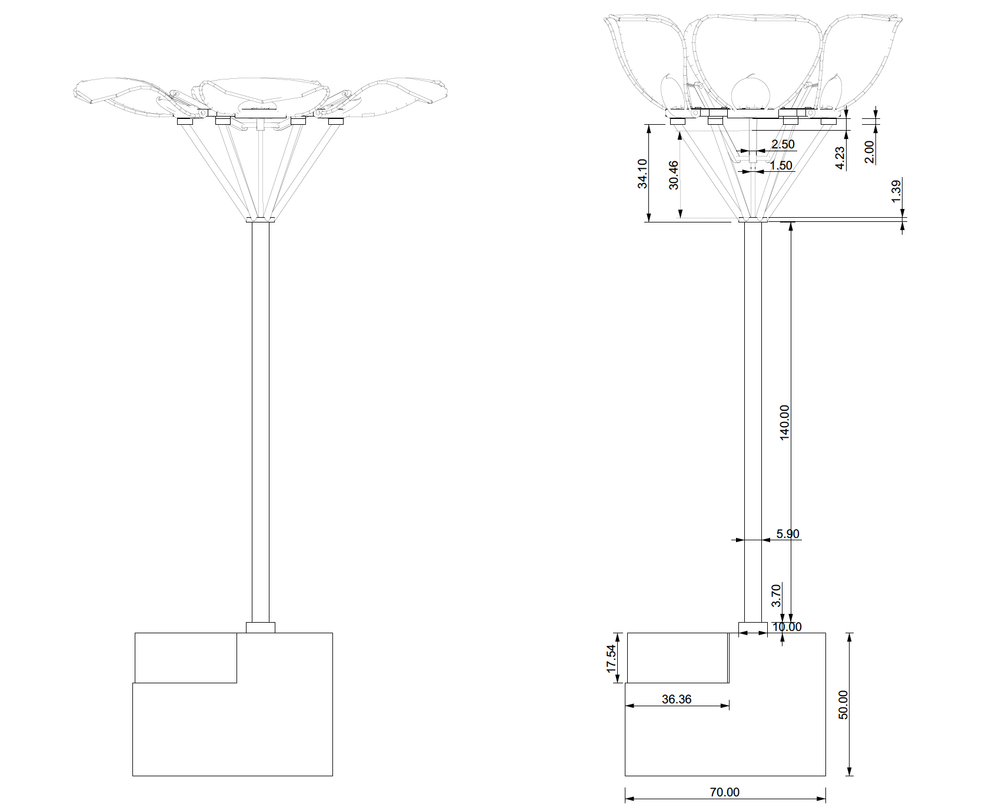

Project
Bloom Luminaire
Blending art, science, and nature in a lighting design course 🌸
Categories
Architecture | Making | Product Design

Organisation
SUTD ASD Term 6 Advanced Topics in Performative Design: Daylight and Electric Lighting
Role
Part of a pair, in charge of the blooming mechanism, electronics, lighting, sewing, etc.
Duration
14 weeks
Project Description
This course taught me about natural and electric lighting in an architectural context. After learning about the scientific basis of light and visual perception, we applied them to the design and construction of an electric light fixture (luminaire).
At the end of the course, I created a kinetic luminaire, Bloom, that mirrors not only the appearance of a flower but also its blooming mechanism. The flower ostensibly engages in a dialogue with humans by taking on an emotive and socially expressive form, unfolding or retracting its petals when one comes into close contact with it. Bloom's petal arrangement is achieved with parametric design that simulates the growth of actual flowers, supported by a mechanical movement encoded in lines of C++. All these come together to produce a cool, calming glow, supplied by a single LED bulb, that diffuses from the blue translucent fabric, captivating the audience to watch this alluring display.
Outline
At the Beginning · Ideation · Study on Flowers · Blooming Mechanism Exploration · Preparing for our 1st Prototype · 1st Prototype · 2nd Prototype · 3rd Prototype · 4th Prototype · Final Product · Final Presentation
At the Beginning
We started with analysing lights around us, drawing how they look like from different angles and analysing how they work. I picked the main lighting fixture in my house, a chandelier to analyse and research about!


I had a lot of fun learning about the history and about the different parts of the chandelier, and little did I know that the origins of the chandelier was so simple -- just 2 wooden beams that formed a cross with spikes at the end to retain candles made from animal fat.


Ideation
Next we began making a list of things we wanted to try out when making our luminaire. The top three things we prioritized are something that was kinetic, something that interacted with and responded to humans and something that allows users of a space to feel calm and at peace. This led us to explore the biomimicry of a flower, as it is part of nature and has a therapeutic effect on people, hence we wanted to bring it into an interior space to benefit people especially in this pandemic season where many people are isolated in confined spaces.
To better understand how flowers bloom and what different types of flowers are there, how all the different types of flowers bloom differently, I did some research on the various flower shapes, petal arrangements and flower grouping, and sketched them out to get a better understanding of them. We also watched tons of youtube videos of flowers blooming and sketched out a sequence of the steps to determine how each petal unfolds and moves to eventually open up.


Blooming Mechanism Exploration
After shortlisting the tulip, orchid and rose as points of reference, we explored different methods these different types of flowers could bloom (i.e. open and close).
MECHANISM 1
MECHANISM 2
MECHANISM 3
After outlining these three mechanisms, we narrowed them down into two options and then we had a discussion to identify which seemed feasible or rather what seemed the easiest to start with. The first was the blooming of a rose, and we imagined it to be a ceiling lamp in a decently large space like a bedroom or a living room. The way the rose would open up would be similar to how an umbrella works, where the different ribs of the umbrella open up to push the petals out. The next option would be a twisting mechanism where the petals would swivel open and we intended to have a domino effect whereby one gear turning would lead to the next gear turning to open up the next flower. For this option, we imagined the lamp to be a dining table lamp or a wall fixture.
Preparing for our 1st Prototype
Next, we considered the materials we were going to use in designing the flower. We also narrowed down on a tulip blooming mechanism that seemed the most feasible to work with and then drew more specific drawings on how we were going to make our prototype, with 2 main variations in mind.

VARIATION 1: Ceiling Lamp


VARIATION 2: Table Lamp


1st Prototype
We then began by exploring different materials like coloured paper, plastic, fabric and tracing paper to use in our luminaire by shining light through it. In this process, we developed a better understanding of the material properties and the respective lighting effects created. In our experiments, we focused on two main aspects: the material quality as well as its structural integrity as a connection/joint to the stem. We had 4 iterations with different materials, starting with paper, then many layers of paper, then plastic, and finally fabric with cardboard as a connection to the stem. After experimenting with the 4 different materials, we decided to use a translucent and flexible fabric as a sleeve for the light to pass through as well as a thin metal wireframe that is both rigid and flexible enough to allow for bending while providing sufficient support for each petal.


2nd Prototype
Learnings from our first prototype led us to the design of our prototype presented during our mid term, which we assembled each petal with wire and fabric from stocking. The fabric petals pulled over a very thin metal wireframe and then sewed to thin connections that were inserted on the slots on the base plate. We then assembled the other 3D printed components like the base plate, the umbrella-shaped thing that supports the base plate and the long, hollow tube for the vertical stem. Within the 3D printed stem, we used a strong and thin copper wire within that would be pulled by the servo motor to open and close the petals and hot-glued this to the little copper ring in the middle. We initially planned to solder it to the copper wire but after trying several times, we failed to do so we used hot glue as an alternative.


For the mechanism of opening and closing the petals, we used an Arduino Uno, ultrasonic distance sensor and a mini servo motor. We firstly identified the logic of how we wanted the petals to open and close and programmed it in C++, with the flower starting in a closed state. Upon coming into close contact with the sensor, the servo would move 180 degrees and open the petals. Upon the next close contact, the servo would move back to its original position and close the petals.


As we presented this during our mid-term review, about 5 weeks into the project, we had to do some drawings too. Here are some details on how the different components are connected and their dimensions as well!
Plan
Section
Elevation
3nd Prototype
From our 2nd prototype, we had a few learnings. Firstly, we needed to find a better way to store all the electrical components at the bottom. Secondly, we wanted to find another way to improve the connection of the fabric to the base plate as the current one was very premature and "prototypish". Thirdly, we needed to learn how to solder properly and not use a random adhesive to just connect things together. Last but not least, we wanted to increase the complexity of our flower by adding another layer of petals. We first went to shop for different types and colours of fabric and then experimented with the effect light has on them. We then put together the electronics to accommodate the heavier petals. As the photos show, our middle piece became a little larger to accommodate for a second set of connections for the extra layer of petals. We also modelled a casing that took the form of a vase to hold the flower and electronics in place.

4th Prototype
After 3 prototypes, we felt very constricted by the small tulip-shaped flower we were iterating on. We also wanted to amplify the movement that was created by the flower as the movement of the petals as we felt like it was not very smooth/comforting which was what we initially set out to achieve. We decided to turn it over to make use of gravity to create a larger movement of the petals that was not controlled entirely by the motor/any electronics…and see where we could go from there. To create a larger movement, we realised we needed larger petals as well, hence given the orientation and the size, our table lamp morphed into a ceiling lamp instead.
Using whatever materials we found lying around, we cut out pieces of crepe paper and stuck them together with glue, assembled the different layers with string, satay sticks and a cup to represent the bulb and explored how flowers can bloom in different ways. The resulting effect was a very flowy shape that bore a vague similarity to a rose or carnation.

Final Product
Here is the process of making our final product! We started with sourcing for more materials as the fabric used in our previous prototype 2 was too heavy and opaque. We sourced high and low for a week for the ideal material and finally came across this nice blue fabric that felt and looked like the veil one wears when getting married. We then planned the shape, size, connections and mechanism of the flower such that we know how much of the material to buy.


Here is the flower that comprises 5 layers of fabric, each layer rotated 30 degrees from the previous one, which creates this draping effect that is reminiscent of a blooming flower. We sewed each adjacent piece to another to make a circular layer, then connected the 5 layers together along these seams here. This series of connected fabric layers results in an interesting blooming mechanism that is controlled by the top seams alone. In order to help us better visualise and design our final luminaire, we used rhino and grasshopper to model out our visions parametrically and scripted a programme to help us animate and predict the movement of the fabric as it opens and closes.


Similar to our previous prototypes, we 3D printed the connections and base plate, this time larger and with more infill in order to support the larger and heavier petals.

We changed our circuit a little based on our final proposed design as normal servo motors do not turn 360 and we needed something that could loop a string a few rounds in order for the flower to move, hence we used a DC motor instead and used a multimeter to have a trial and error to determine how much voltage and resistance to add into the circuit to achieve the perfect speed of turning/rotation for the DC motor. Here is the circuit and code for our mechanical movement, where we used a passive infrared sensor to detect the motion of warm bodies, as we wanted our light to respond the movement of people. So the code shows that when the PIR sensor detects motion, then it would activate the DC motor to wind up string to open up the flower. When there is no motion, the string would naturally unwind due to gravity, releasing the string and allowing the flower to close.


After a series of experiments and explorations, we arrived at our final design at our desired scale. From this plan view, you can see our blooming luminaire spans about 50cm across when opened fully. As we were working with a mechanical system which demands high precision, we dimensioned and 3d printed all our connecting components and armatures to ensure a smooth assembly process. From our section we can see how the light we chose interfaces with the luminaire, we actually made a decision to change from using LED strips in previous iterations, which was advantageous because it was programmable, to a single LED bulb that is strong enough for illuminate the whole fabric, which allows for more diffused lighting across each layer. We made a ceiling mockup where all the electronics were placed, and the luminaire can hang from as a ceiling lamp. It can be seen in the elevation the flower in its open state, with the staggered layers opening downwards to greet the users when they enter the room.


Here are some behind-the-scenes photos of how we propped up our ceiling lamp in order to get our final photos! It was a struggle with me tiptoeing on a box to prop our entire light setup on top of a large monitor in our studio. My partner lay down on the floor to take all our nice shots and these behind-the-scenes photos too :)


Final Presentation!


Some cool renderings showing how our luminaire would look like in a living room in the day or at night.